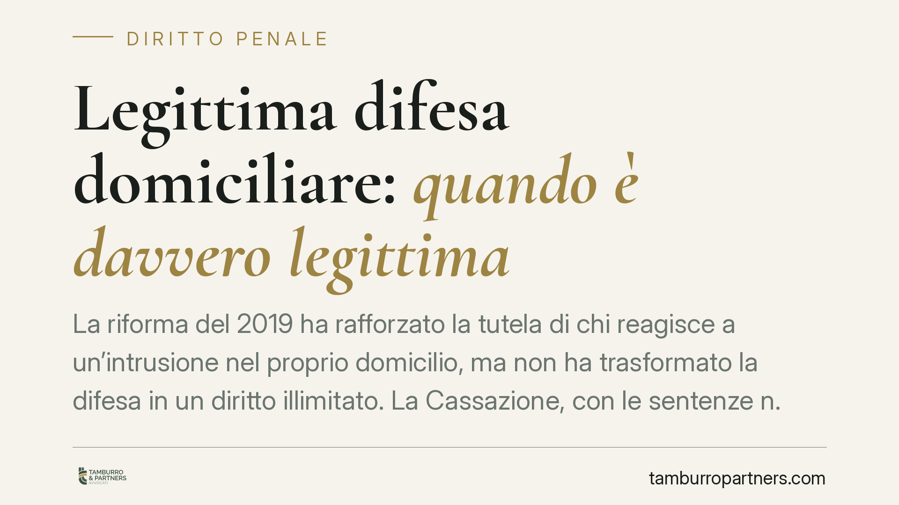

Legittima difesa domiciliare: quando è davvero legittima
La riforma del 2019 ha rafforzato la tutela di chi reagisce a un'intrusione nel proprio domicilio, ma non ha trasformato la difesa in un diritto illimitato. La Cassazione, con le sentenze n. 41528/2024 e n. 23977/2022, ribadisce che servono requisiti precisi e cumulativi. Capire quando la difesa è legittima, e quando diventa reato, è decisivo per chiunque si trovi a reagire in casa propria.

Il caso e il contesto
La percezione comune è che, dopo la riforma del 2019, chi reagisce a un ladro in casa sia sempre al riparo da conseguenze penali. Non è così. La giurisprudenza più recente della Cassazione penale ha chiarito che la legittima difesa domiciliare resta un istituto a requisiti rigorosi, non una licenza di reazione.
Conoscere i confini di questa scriminante — cioè della causa che esclude la punibilità di un fatto altrimenti reato — è essenziale. Chi li ignora rischia di passare da vittima a imputato.
Inquadramento normativo
La materia è regolata dall'art. 52 del codice penale, modificato dalla Legge 26 aprile 2019, n. 36. La norma distingue la legittima difesa comune da quella domiciliare.
Il secondo comma dell'art. 52 c.p. presume la proporzione tra difesa e offesa quando una persona, legittimamente presente in un domicilio o in un luogo di esercizio di attività commerciale, usa un'arma legittimamente detenuta per respingere l'intrusione. Il quarto comma, introdotto nel 2019, stabilisce che "agisce sempre in stato di legittima difesa" chi respinge l'intrusione di taluno posta in essere con violenza o minaccia di uso di armi.
Quell'avverbio — "sempre" — ha generato l'equivoco. La Cassazione lo ha ridimensionato: la presunzione opera solo in presenza degli altri presupposti di legge. Non elimina il vaglio del giudice sulla reale situazione di pericolo.
Cosa dice la Cassazione
Con la sentenza n. 41528 del 20 settembre 2024, la Sezione V ha confermato che la scriminante richiede requisiti cumulativi, tutti necessari:
- Attualità dell'aggressione: il pericolo deve essere presente e concreto nel momento della reazione. Se l'intruso sta fuggendo o la minaccia è cessata, la difesa non è più attuale, e la reazione diventa vendetta o eccesso.
- Animus defendendi: la finalità deve essere difensiva, non ritorsiva. Chi spara al ladro in fuga, o a chi non rappresenta più un pericolo, agisce per punire, non per difendersi.
- Proporzione tra offesa e difesa: pur attenuata dalla presunzione del 2019, resta un criterio di controllo. La reazione non può essere manifestamente sproporzionata rispetto al pericolo.
La precedente pronuncia n. 23977/2022 aveva già tracciato la stessa linea, escludendo l'automatismo assolutorio e riaffermando il ruolo del giudice nel valutare la dinamica concreta dei fatti.
Implicazioni pratiche
Per il cittadino, il messaggio è netto: la riforma ha ampliato la tutela, ma non ha abolito il giudizio di merito. Ogni episodio viene ricostruito nel dettaglio — orario, posizione delle persone, direzione dei colpi, presenza o cessazione del pericolo.
Tre errori ricorrenti portano all'imputazione:
- Reagire quando l'aggressore si sta già allontanando.
- Usare un'arma non legittimamente detenuta.
- Agire con modalità che rivelano intento punitivo più che difensivo.
Va aggiunto un profilo spesso trascurato: anche in caso di assoluzione penale, resta aperta la possibilità di un'azione civile per il risarcimento del danno da parte dell'aggressore o dei suoi eredi, salvo i casi di esclusione previsti dalla legge.
Cosa fare in concreto
- Valuta l'attualità del pericolo prima di reagire. La difesa è legittima solo finché l'aggressione è in corso.
- Detieni armi solo se legalmente autorizzato. La presunzione di proporzione opera unicamente con armi legittimamente detenute.
- Non inseguire e non colpire chi fugge. La reazione sull'intruso in allontanamento fa cadere la scriminante.
- Dopo l'episodio, chiama immediatamente le forze dell'ordine e astieniti da modifiche della scena.
- Richiedi assistenza legale prima di rendere dichiarazioni dettagliate. Le prime versioni fornite pesano sull'intero procedimento.
La legittima difesa domiciliare tutela chi si trova aggredito in casa propria, ma la sua applicazione dipende dalla ricostruzione dei fatti. La differenza tra difesa e reato spesso si gioca su dettagli che solo una valutazione tempestiva può chiarire.
---
*Contributo informativo a cura di Tamburro & Partners - Avv. Giuseppe Tamburro. Non costituisce parere legale.*
Ogni condominio ha una storia a sé.
Se gestisci un'amministrazione e vuoi un confronto su una specifica questione condominiale, scrivi allo studio. Ti rispondiamo entro un giorno lavorativo.